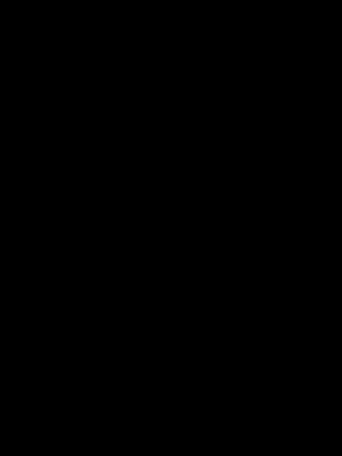

Introduction
For the first part, I printed out an ArUco with 6 tags and captured about 30-50 cameras and calculated the camera instrinsics matrix using my iPhone camera with 1x zoom.
I then took about 50 images of a rubber ducky I had on hand for NeRF training later, calculating the extrinsics matrix for each camera, being very careful to account for edge cases
in both this task and the previous task related to detecting ArUco tags by skipping problematic images and also making sure the camera extrinsics matrix actually functioned properly and
when applied to example camera space coordinates it output world coordinates that made sense (i.e. did not output negative z-values, and issue which I was stuck on for a long time). I solved the
issue by apply a diagonalization transform on the z-axis twice, one to account for the z-axis of the camera coordinate system and one to account for the z-axis of the world coordinate system. Only then,
did my results plot properly, as shown below as a cloud of cameras from two different angles, displaying the camera frustums' poses and images:
Then I undistorted the images I collected, making sure to crop the black edges or bounds while also recalculating the camera instrinsics matrix, of the object and saved them into a dataset with the format needed for training a NeRF model later.
Fitting a Neural Field to a 2D Image
Before testing training a NeRF on a scene, it would be better to start off training a Neural Field of one image. So, I started with the template provided in the project instructions,
with an MLP of about 4 fully-connected linear layers, with a positional encoding layer being applied to the input coordinate before being fed into the layers, ReLU layers between the fully connected layers
and a sigmoid layer at the end, outputing a 3D RGB vector, predicted color for the input camera coordinates. I tested different values of L along with different widths of the hidden layers, but found that higher L values of
L = 10-12 functioned optimally, with width layer (128 or 256) not really impacting the final results. For low L encoding max frequencies, I found that less information was encodable and thus the output looked more like the
low-poly video game character. Here are the results of training at various checkpoints on the provided image of a fox, with PSNR values graphed over iterations (L = 10; width = 256).
A hyperparameter grid

L=3
width=128

L=12
width=128
Fit a Neural Radiance Field from Multi-view Images
Now that the warmup was completed, the real challenge lay ahead of me. For part 2.1, I implemented the camera to world conversion by following the transformation equation
between the world space coordinates X_w = (x_w, y_w, z_w).T and the camera space X_c = (x_c, y_c, z_c).T with rotation matrix R_{3x3} and the translation vector t, and inverting the classic tranformation
of X_c = T * X_w -> X_w = T^-1 @ X_c. I also converted this equation from column form into row form for batch processing, with X_w.T = X_c.T @ T^-T. For the pixel to camera coordinate conversion,
I implemented a function pixel_to_camera that takes in a camera intrinsics matrix K, a 2d coordinate to evaluate from: uv, and a depth of s = z_c. I obtained the inverse of the equation once again with a similar process
and implemented batch processing by converting the inverted equation to row form. I then implemented pixel_to_ray with the previous two functions I created, supporting batch processing. All of these
functions were implemented in torch. After the base functions were implemented that allows us to convert from a 2d image pixel coordinates with the camera intrinics and extrinsics to an origin ray and a direction ray that
would help with the next part: the dataloader.
I wrote the sampling functions following the instructions and set n_samples to 64 for the sample along rays function. For the sample rays function I first sampled a number of images and then sampled rays from each image. I implemented both of these functions in a data structure I defined as RaysData
that would be helpful for simplifying the training step. I also implemented the random noise that would be added when sampling along rays. I then wrote the dataloader to support the viser code that was given
in the project description with the following results:

Sampling rays

Sampling along rays
n_samples = 64
I then implemented the model architecture described for the Neural Radiance field and the volume rendering, following the explicit guide of the project instructions and the NeRF paper. I tested my volume rendering code against the provided test, which passed.
I then wrote the training loop and initial data loading for the lego data. I also wrote functions that would help me update my psnr values for plotting after training and generating novel views that were not in the dataset of the truck. In order to get to a PSNR value of
23, I decided to play around with the hyperparameters until I found a set that would allow me to train my model adequately while also not taking an unreasonable amount of time. I used the provided near and far values of 2.0 and 6.0, respectively, and a rays per iteration value of
around 300, which meant that every time I sampled rays and then sampled points along those rays for each gradient step, I would sample 300 rays. I found untintuitively that increasing training iterations and decreasing rays sampled per gradient calculation tended to yield better and faster
training results for my case, which did not necessarily stay the case when I tried training on my own data. I also used a lower learning rate of 1e-4, which seemed to work optimally for my case. I ran training for 20000 iterations, which got my model to the result of 23 PSNR.
.gif)
A gif of my model from the test c2ws

PSNR Validation Curve
When it came to training on my own data, it was a disaster. I tried all sorts of hyperparameter configurations, and tried increasing and decreasing the number of rays I sampled per iteration, downsampling my dataset, cropping the images and accounting for the new camera intrinsics. In a last ditch effort, I
tested the hypothesis that my model just wasn't training for long enough, and that eventually, given an extensive time, it would learn something. The hyperparameter changes I ultimately stuck with were to increase the ray sampling to 1024 and training for about 3 hours. The results of this hypothesis can be seen below:

A gif of my model from a rotating circle of camera views.

The PSNR curve from iteration 20000 to 30000